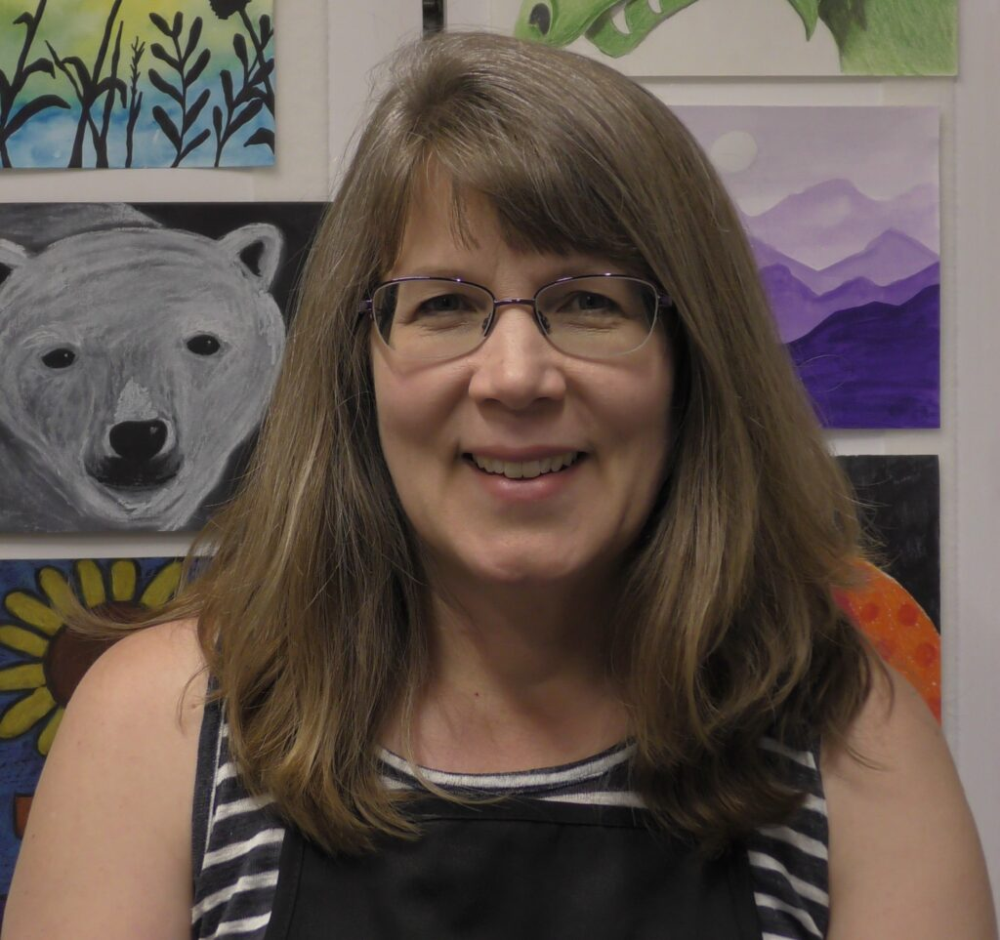

Christmas Gift-Making Days
This is an opportunity for your child to make Christmas gifts for family and/or friends.
There will be two different Saturdays for your 2nd grade or older child to participate.
Students can drop in for up to 1-1/2 hours to create a variety of Christmas gift ornaments.
All proceeds will go towards art class scholarships. For more information and to register,
please click on the following link:
Christmas Gift-Making Days Information and Registration
FALL ART CLASSES IN SESSION
The semester ends Friday, December 20th.
There will be no classes scheduled the week of Thanksgiving (November 25th-29th).
FALL ART SHOW!
January 11th – 25th, 2025
Richland Public Library
Stop by the local library during the dates listed above and check out my fall students’ artwork!
WINTER/SPRING CLASSES!
Winter/Spring Semester Classes begin Monday, January 6th!
The semester will end Friday, May 30th, and the Art Show will be Saturday, May 31st!
If interested in a class, please contact Amy at amy@rlb.org or 509-542-7779.
WINTER/SPRING SEMESTER SCHEDULE:
MONDAYS:
10:00 am – Diorama Class (4th-8th grade) – 1.5hr/$20 – 2 openings
1:00 pm – General Art (4th-7th grade) – 1.0hr/$15 – 3 openings
4:00 pm – General Art (3rd-6th grade) – 1.0hr/$15 – 1 opening
TUESDAYS:
10:00 am – Private Student – 1.5hr – FULL
1:00 pm – Open Studio (7th-12th grade) – 2.0hr/$25 – FULL
3:30 pm – Open Studio (7th-12th grade) – 2.0hr/$25 – 2 openings
WEDNESDAYS:
10:00 am – General Art (3rd-6th grade) – 1.0hr/$15 – 4 openings
1:00 pm – Open Studio (7th-12th grade) – 1.5hr/$20 – 3 openings
4:00 pm – Open Studio (4th-7th grade) – 1.5hr/$20 – 2 openings
THURSDAYS:
10:00 am – Ladies Art (Women 18 and up) – 2.0hr/donation – 2 openings
1:00 pm – Open Studio (7th-12th grade) – 2.0hr/$25 – 3 openings
4:00 pm – General Art (K-2nd grade) – 1.0hr/$15 – 2 openings
FRIDAYS:
10:00 am – General Art (K-2nd grade) – 1.0hr/$15 – 1 opening
1:00 pm – Realistic Acrylic Painting (7th-12th grade) – 1.5hr/$20 – 3 openings
4:00 pm – Advanced Art (4th-7th grade) – 1.0hr/$15 – 4 openings
WINTER/SPRING SEMESTER CLASS DESCRIPTIONS:
K-2nd Grade Weekly Class (1 hr):
General Art – Students will focus on learning the elements of art through a variety of mediums and art styles.
3rd-6th Grade Weekly Class (1 hr):
General Art – Students will focus on learning the elements of art and principles of design through a variety of mediums and art styles.
4th-7th Grade Weekly Class (1 hr):
General Art – Students will focus on learning the elements of art and principles of design through a variety of mediums and art styles. This class is a more advanced class than the 3rd-6th grade General Art class.
4th-7th Grade Weekly Class (1 hr):
Advanced Art – This class is for students who have good art skills and art experience, and want to grow in their individual skills. We will be creating a variety of art in different styles as well as learning how to appreciate the art of famous artists.
4th-8th Grade Weekly Class (1.5 hrs):
Diorama Class – This will be a fun and creative class as we will be creating miniature worlds. Students will use a variety of art and sculpture mediums and supplies to create several different themed dioramas.
7th-12th Grade Weekly Class (1.5 hrs):
Realistic Acrylic Painting - This class is for older students who want to learn acrylic painting techniques used for realistic paintings. I personally love painting realistically and will be teaching the process and techniques I use to create realistic paintings. The techniques learned can be applied to other styles of painting as well.
4th – 7th Grade Weekly Class (1.5 hrs):
Open Studio - This class is for older students who are creative and want to work on their own projects or try something new. Students should have a good understanding of art, be able to work independently, and want the flexibility to create their own art. I am always available during these classes to assist/teach techniques as needed. We have students who have grown in their painting skills; practiced their drawing skills; experimented with resin and other sculpting materials. All supplies are provided though some students do bring some of their own supplies from home.
7th-12th Grade Weekly Class (2.0 hrs):
Open Studio - This class is for older students who are creative and want to work on their own projects or try something new. Students should have a good understanding of art, be able to work independently, and want the flexibility to create their own art. I am always available during these classes to assist/teach techniques as needed. We have students who have grown in their painting skills; practiced their drawing skills; experimented with resin and other sculpting materials; created dioramas; and learned how to use an airbrush. All supplies are provided though some students do bring some of their own supplies from home.
Ladies Weekly Class (2.0 hrs):
Open Studio – This class is for women ages 18 and up who would like to come and work on their art projects. I am available to help as needed especially if you are wanting to learn something new. You can use my supplies or bring your own. Donations are helpful if you plan to use my supplies, and all donations are tax deductible.
CLASS DISCOUNTS:
Sibling class discount is $5 per sibling per class
Multiple class discount is $5 per class
Limited partial scholarships are available. Please contact Amy for more information. (amy@rlb.org or 509-542-7779)
CLASS POLICIES:
If you desire to sign up for just one or two classes per month, there will be an additional $5 fee added to each class. If you sign up for weekly classes, please see the fees listed above for each class.
If your child will miss their scheduled class for any reason, please let me know in advance. If they are sick, please let me know before the class begins. If you notify me, I will discount the class for you. If your child is a “no show” to class, then you will be required to pay for the class. If you are unsure if there is a scheduled class on a particular day, please email or text me as I do not necessarily follow the school district calendar.
If your child is sick, please keep them home. They need to be fever free for 24 hours before returning to class.
Please make sure to have your child dress appropriately for art. I cannot guarantee paint (or other medium) free clothes!
Eli (my German Shepherd dog) is our art class mascot 🙂 He is awesome with students, but if your child is uncomfortable with dogs, please let me know and I will make sure he is kept in his kennel during your child’s art class.
Art classes are invoiced on the first of each month via email. You have 30 days to pay, and can pay online via a link in the email, cash or check (made payable to Radiant Light Broadcasting).
In-Person Small Art Classes:
Miss Amy offers small art classes in her home studio located in Richland, WA. Classes are available year round with a summer session (June – August); a fall session (September – December); and a winter/spring session (January – May). Each class is limited to four students which allows students to work at their own pace, and receive additional one-on-one as needed. Miss Amy values each student, and provides a safe environment where a student can confidently grow in his/her art skills.
TESTIMONIALS:
Ms. Amy is the best! Our daughter has been taking her classes for over 3 years! ~Elizabeth
My girls LOVE their art classes!! ~Jennifer
Highly recommended! ~Sarah
My kids LOVE Miss Amy and her classes!! I also highly recommend!! ~Katie
My daughter LOVES Miss Amy and her classes!! I also highly recommend!! ~Jill
My daughter enjoyed Miss Amy’s class very much. ~Angie
You are an amazing teacher! You give just enough guidance to my daughter. She (and I) are so proud of the creations she has made in your class. When we decided to try the class out, we had no idea at the time how much your teaching/abilities/experience would mesh so well with my daughter’s interests and skills. What a blessing! Thank you. ~Shellie
Our daughter enjoys the classes so much! Thank you! ~Linnea
About the Instructor:

As an accomplished artist and experienced youth art instructor, Amy Pirozok (Miss Amy) has a passion for teaching a variety of art skills to youth, encouraging them to discover their own ability to create as well as grow in confidence in their individual skills. Amy teaches both online Zoom and in-person art lessons and classes. On occasion, she will paint a commissioned pet portrait and/or mural. In her spare time, she enjoys spending time with family, friends, and her German Shepherd.
Amy’s passion for teaching art comes from the calling God has put on her life. She believes God has called her to raise up child artists to show God’s glory to the world. Only when you are doing what God has designed you to do, will you experience joy and peace.